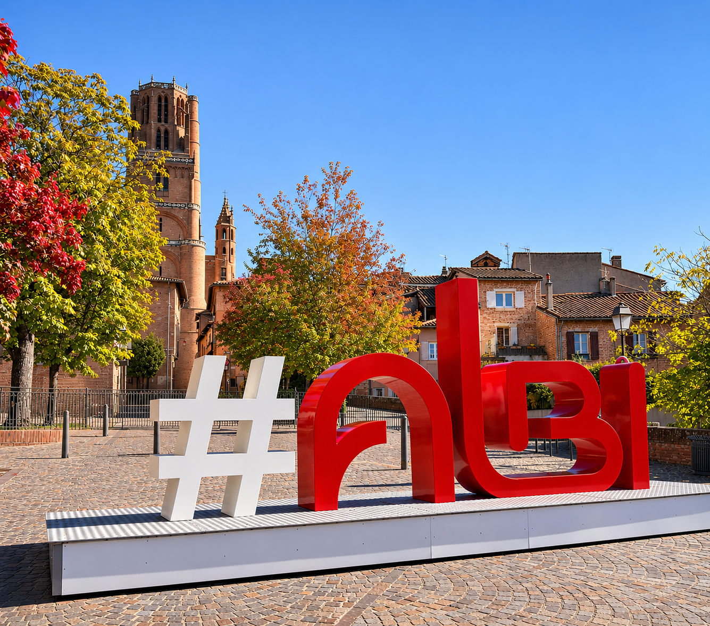

Art encountered along the way
Visit Journals
Artworks encountered, places explored and details that catch the eye. These journals bring together photographs and impressions gathered while visiting different cities.
ExploreOne city · many discoveries

29 October 2026
Albi — The Red City
Albi reveals itself step by step, glance by glance. Red brick, narrow streets and the banks of the Tarn form the setting for this visit.
From Sainte-Cécile Cathedral to the works of Toulouse-Lautrec, explore the photographs and discoveries gathered during this stay.